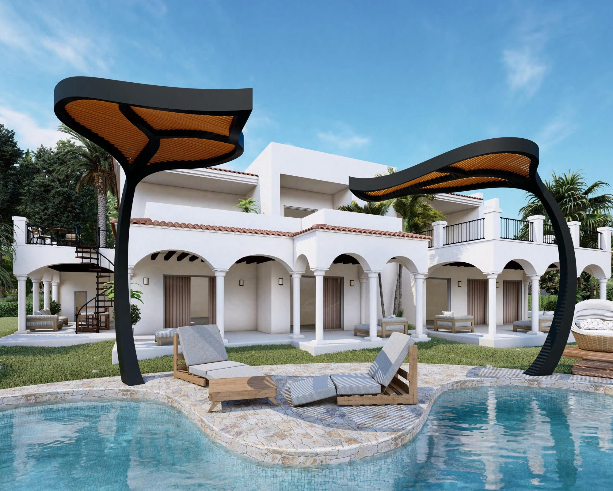
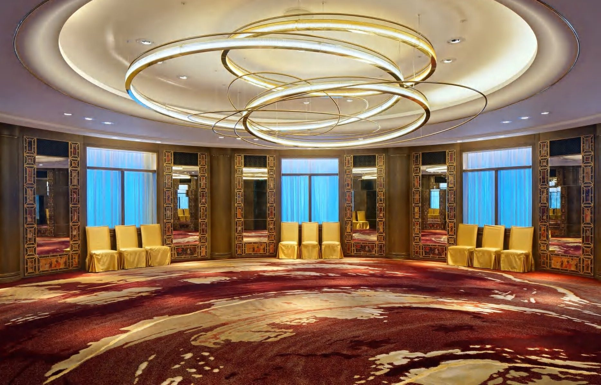

From the first conversation to the final installation, a commission is a single unbroken line of authorship. Here is how a piece comes to life.
A commission is not a transaction; it is a relationship with a single outcome — an object that exists nowhere else. From the first sketch to the final fixing, the line of authorship is never broken or handed off.
People often ask what it is like to commission a piece from the atelier. The honest answer is that it is a partnership, and a disciplined one. Here is how it unfolds.
Everything begins with the space and the feeling you want it to create. We listen first: the architecture, the light, the way the room will be used, the emotion you are reaching for. No drawing is made until the brief is understood.
We respond with a concept drawn against your specific architecture — form, scale, material and the quality of light, resolved as a single idea. You see exactly how the piece will sit in the room before anything is built.

Once the concept is agreed, our engineers resolve every load path, suspension, service and tolerance. This is the unseen work that lets the finished piece feel effortless and last for decades. Material and finish samples are developed and approved by hand.
The piece is built and finished in-house, weld by weld and crystal by crystal. The same hands that drew it see it through, which is why nothing is lost in translation between idea and object.
One brief. One author. One object that could belong nowhere else.
We deliver and install, aiming every light and fixing every junction ourselves, so the first time you see the piece in place is the moment it was designed for. Explore where a commission can begin, or simply tell us about your space.
— The Atelier, The Stellar Kraft
Share the space and the feeling you are chasing. We will take it from first sketch to final installation.
Begin a Commission →